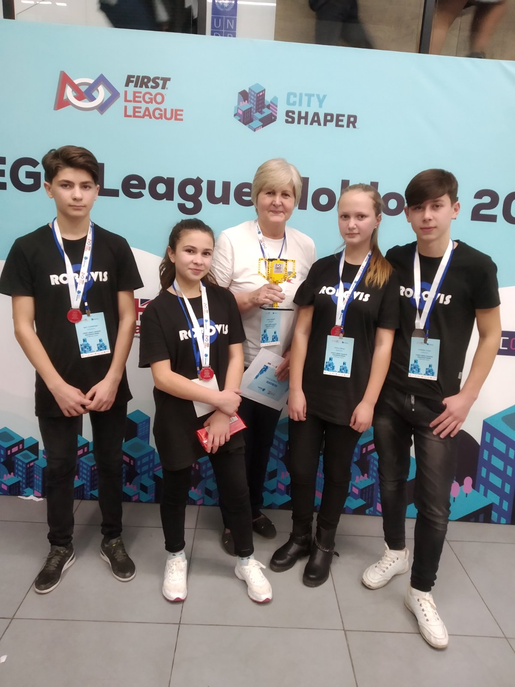
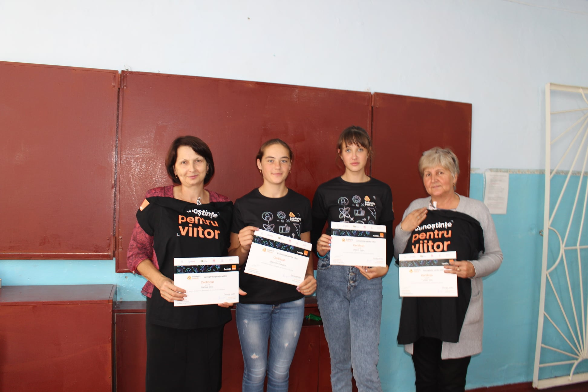
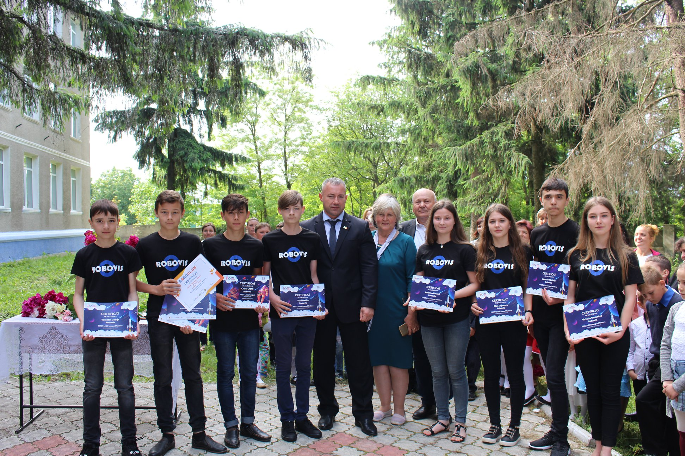
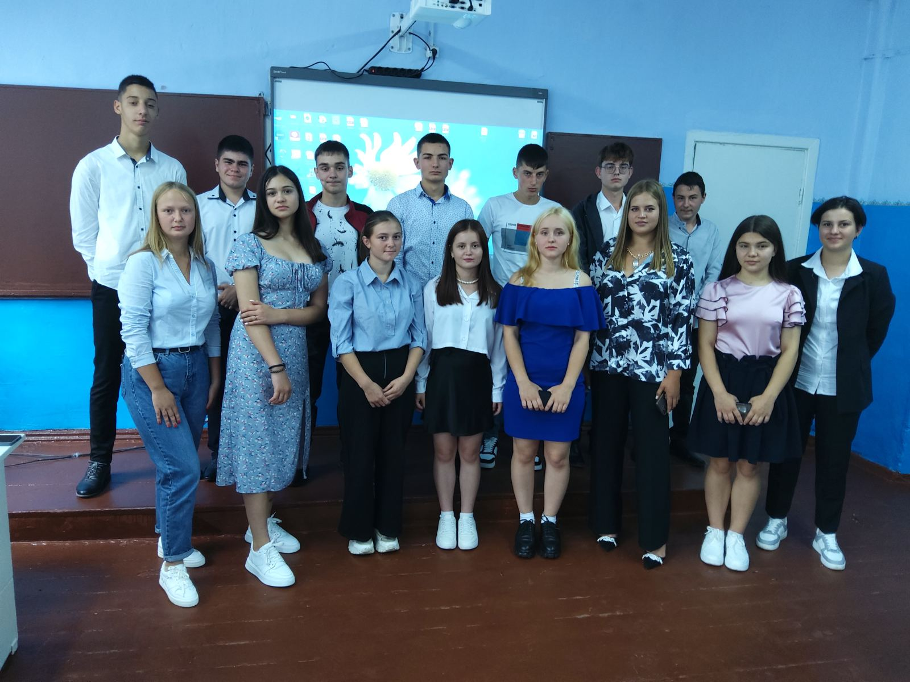

Ema Țaulean
|
Profesor
Româna, Rusa tauleanema@gmail.com +373 222 333 |
Sunt profesoară de mulți ani. Școala a devenit viața mea. Provocarea elevilor pentru cercetare, studiere, creare a devenit un scop al meu. Sunt pasionată de arta, sport, școală. Toate acestea mă apropie de elevi- relația noastră este mai credulă. Îmi iubesc profesia și îmi voi dedica viața copiilor până la sfârșit. |
|  |  |  |  |
Experiența de lucru
Desenator proiectant
Martie 1983 - 1986Desenator proiectant la uzina "Signal" din orasul Chișhinau.
Pictor - decorator
1986 - Decembrie 1987Am activat in calitate de pictor-decorator în colhozul "Pravda"...
Profesor
Decembrie 1987 - PrezentActivez ca profesor de artă plastică, educație tehnologică și informatică la Liceul Teoretic Visoca.
Educație
Studii universitare
Decembrie 1987 - 1994Studii universitare, Institutul Pedagogic "Alecu Russo", or. Bălți
Studii neterminate
Decembrie 1978 - 1985Institutul Politehnic "Serghei Lazo", or. Chișinău